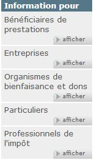

Fondements
Durée de la lecture : 2 minutes
Sur cette page
Regroupement et structure
Vous devez créer une structure qui aidera les utilisateurs à comprendre rapidement l’information.
La bonne structure guidera les utilisateurs vers l’information grâce à la reconnaissance et le contexte.
Réfléchissez à la façon dont vous pourriez organiser une pile de chapeaux divers.
Les mêmes chapeaux peuvent être regroupés par catégorie (à plumes, à rubans, protection, religieux, militaire, style...); selon leur lieu de fabrication (Hollande, Afrique, Japon...); par ordre alphabétique (casquette, melon, fédora...); ou par continuum, tel que la taille ou le coût.
Lorsqu’un chapeau est pris seul, il peut nous en dire peu sur lui même ou sur le porteur, mais en comparaison avec d’autres chapeaux, il peut signifier l’autorité, l’appartenance, la profession ou un intérêt.
L’organisation créative de l’information crée de nouvelles informations.
Les chapeaux ne changent jamais, mais le fait de les suspendre selon des motifs différents, des règles différentes ou sur des supports à chapeaux différents peut influer sur ce que nous apprenons à leur sujet.
Avant de déterminer comment organiser votre contenu, vous devez comprendre :
- Sujet ou domaine de votre contenu (disponible en anglais seulement), c’est-à-dire le contexte général du sujet
- Modèles mentaux des utilisateurs (disponible en anglais seulement) par rapport à ce contenu (conception intrinsèque de la notion)
- Besoins et objectifs opérationnels (disponible en anglais seulement), qui peuvent avoir une incidence sur vos objectifs en matière d’architecture de l’information (AI)
Lorsque vous regroupez du contenu, n’oubliez pas que les catégories ne sont pas neutres. Chaque catégorie expose certains biais et donne la priorité à un point de vue particulier au détriment des autres.
Par exemple, avant de déménager sur Canada.ca, l’Agence du revenu du Canada (ARC) avait son propre site. Le contenu était organisé par ordre alphabétique et par auditoire.
Lorsque le nouveau modèle du SCT a été publié, le regroupement et l’ordre ont été reconsidérés.
| Avant avril 2013 | Après mai 2013 |
|---|---|
|
|
| Capture d’écran  |
Capture d’écran |
Plusieurs changements ont été apportés :
- Organiser selon la popularité plutôt que par ordre alphabétique
La première option du menu attire le plus l’attention, de sorte que la rubrique « Bénéficiaires de prestations » était involontairement privilégiée par rapport au contenu beaucoup plus populaire des rubriques « Particuliers » et « Entreprises ». - Renommer « Particuliers » en « Particuliers et familles » et déplacer le contenu « Bénéficiaires de prestations » dans la page « Particuliers et familles »
Restructuration pour correspondre au modèle mental des utilisateurs. - Renommer « Professionnels de l'impôt » en « Représentants »
Les représentants personnels ne trouvaient pas l’information dont ils avaient besoin parce qu’ils ne se considéraient pas nécessairement comme des professionnels de l'impôt.
La réorganisation et le réétiquetage de ces catégories ont permis aux visiteurs de s’identifier correctement dans les catégories.
Rappelez-vous : Il n’y a pas d’AI neutre. Bien que les catégories puissent être parallèles, le placement, l’ordre et la priorité qu’on leur accorde ont une incidence sur l’expérience de l’utilisateur. De plus, puisque les catégories doivent être étiquetées, des problèmes peuvent survenir si les étiquettes ne sont pas efficaces.
De haut en bas et de bas en haut
L’architecture d’information (AI) de haut en bas est l’image d’ensemble du site qui permet à l’utilisateur de naviguer dans les principales sections de contenu. Beaucoup d’utilisateurs passent par-dessus l’AI, utilisant plutôt le moteur de recherche.
L’AI de bas en haut est en fait le contenu. Ce sont les rubriques, les regroupements d’information, et le placement du contenu qui aident l’utilisateur dans ses recherches et sa navigation.
Idéalement, il faudrait examiner et considérer tant l’AI de haut en bas que l’AI de bas en haut.
Cycle de vie
Gardez à l’esprit que la qualité d’une organisation ou d’une structure dépend de l’engagement à la maintenir.
L’environnement numérique a tendance à changer facilement et souvent. Cela signifie que l’architecture de l’information (AI) est également fluide et itérative. Au fur et à mesure que les besoins des utilisateurs ou de l’organisation évoluent, il se peut que l’AI doive également changer.
Toutes les sections du cours
- Date de modification :